Monitoring, backup and restore, security
Monitoring
The BakersCrumbs dashboard shows requests, errors, answer volume, response time, CPU, memory and disk. The text panel at the top gives one sentence per alarm threshold.
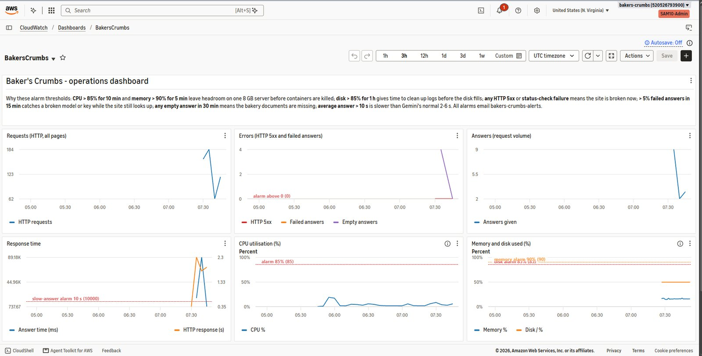
| Alarm | Condition | Why this threshold |
|---|---|---|
| bakers-crumbs-cpu-high | CPU > 85% for 10 min | Leaves headroom on one server before answers slow down; 10 min ignores short spikes |
| bakers-crumbs-status-check-failed | StatusCheckFailed > 0 (1 min) | The instance or its host is broken now |
| bakers-crumbs-disk-high | Disk / > 85% for 1 h | Gives time to clean logs before the disk fills and the database stops |
| bakers-crumbs-memory-high | Memory > 90% for 5 min | Six containers share 8 GB; above 90% one may be killed |
| bakers-crumbs-http-5xx | Any HTTP 5xx in 1 min | The app or proxy is failing for real users |
| bakers-crumbs-answers-failed | > 5% of answers failed in 15 min | The site is up but the assistant is not working (model, key or quota) |
| bakers-crumbs-empty-answer | Any empty answer in 30 min | The bakery documents are probably missing |
| bakers-crumbs-slow-answers | Average answer > 10 s for 5 min | Normal answers take about 1 s; AI is slower than a web page, so 10 s rather than 3 s |
| bakers-crumbs-health-check-failed | HealthCheckOK < 1 in 15 min, missing data = alarm | Catches a retired model or bad key before a customer does, and notices if the check itself stops |
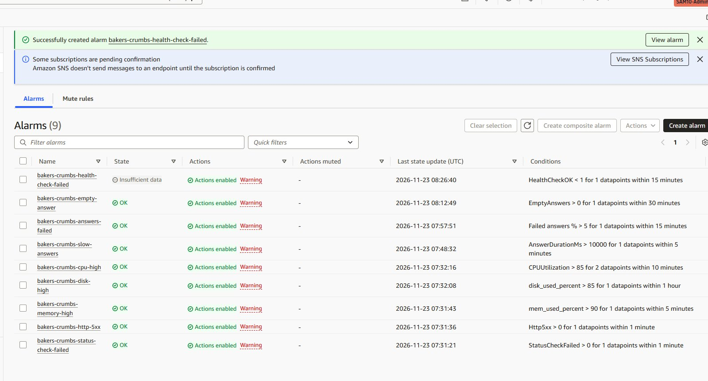


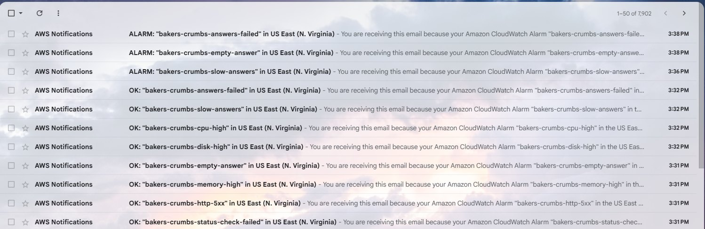
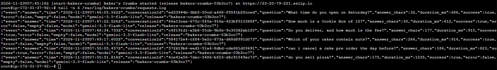
/var/log/bakers-crumbs/requests.log, shipped to CloudWatch with 30-day retention): question, duration, success, model and release for each answer.Log groups: /bakers-crumbs/librechat (application), /bakers-crumbs/mongodb (database), /bakers-crumbs/caddy-access (every HTTP request), /bakers-crumbs/requests, /bakers-crumbs/automation, all kept 30 days. One limitation: the request log measures technical success (an answer arrived), not correctness; that is what the graded test questions are for.
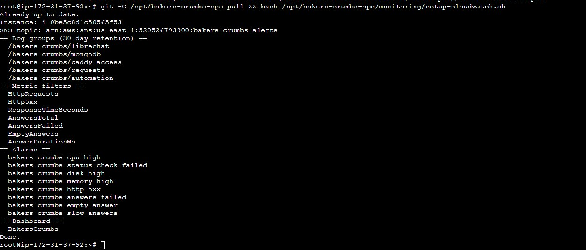
monitoring/setup-cloudwatch.sh: log groups, metric filters, alarms and the dashboard.Backup and restore
What would have to be restored: (1) the MongoDB database: users and chats; (2) the bakery documents in S3; (3) configuration and secrets: the repository (branding, scripts, compose override), the Gemini key in Parameter Store, and LibreChat's own .env secrets (regenerated on a rebuild; they only protect login sessions).
The database is backed up every hour by backup-mongodb.sh to s3://bakers-crumbs-tmth/backups/mongodb/; a lifecycle rule deletes backups after 7 days. The content bucket has versioning on, so an overwritten or deleted document can be recovered.

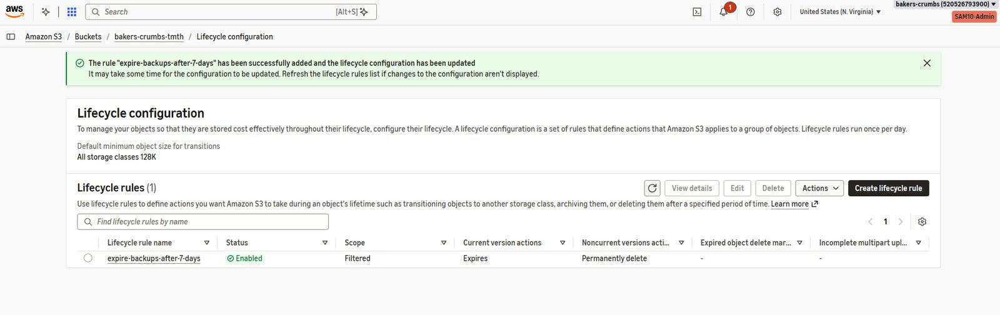
expire-backups-after-7-days on the backups/ prefix.
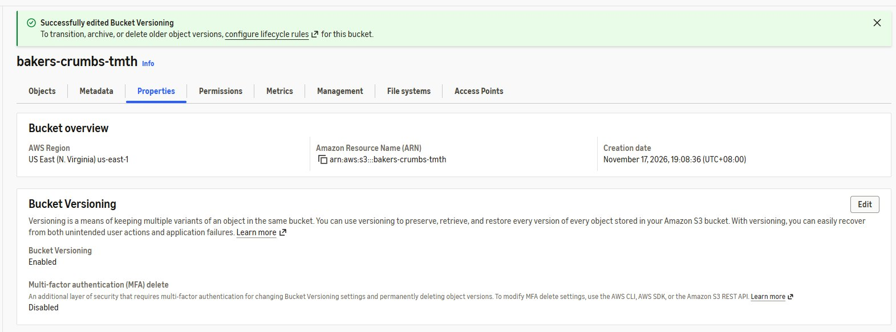
bakers-crumbs-tmth.Restore test, 23 Nov 2026
| Time (PST) | What happened |
|---|---|
| 16:20:27 | Backup taken: 40,350 bytes, 2 s |
| 16:27 | Before: 1 user, 19 conversations, 47 messages |
| 16:28:53 | I deleted the whole database: db.dropDatabase() |
| 16:29:02 | restore-mongodb.sh downloaded the 16:20 backup, stopped the app, ran mongorestore --drop |
| 16:29:10 | After: 1 user, 19 conversations, 47 messages |
| 16:29:13 | App restarted; restore finished in 12 s |
| 16:31 | Logged in again; all 19 chats back |
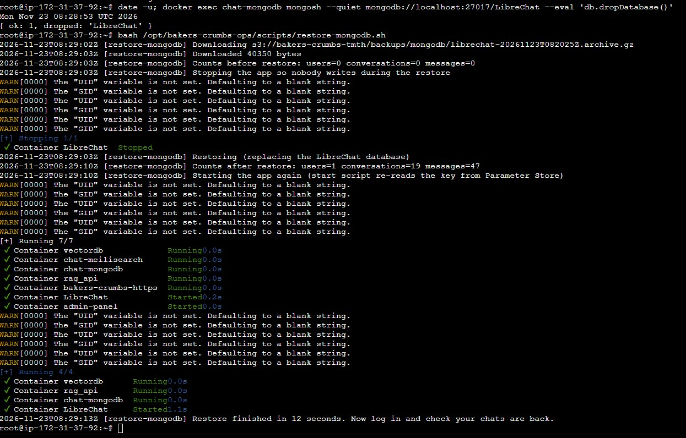
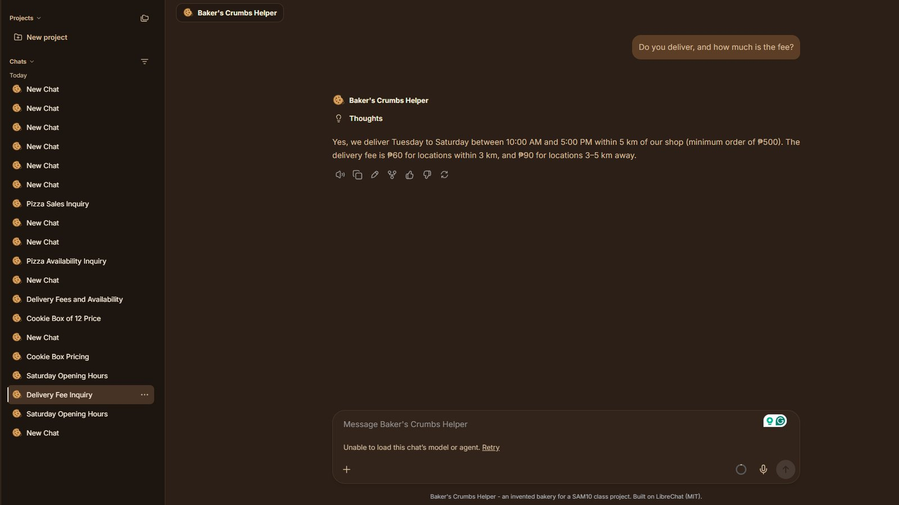
RPO: up to 1 hour of chats, because the database is backed up hourly; in the test nothing was lost because no one chatted after the 16:20 backup. RTO: about 1 minute once someone runs the restore script (20 s from deletion to the app restarting, plus about 30 s to warm up); if the whole server were lost, rebuilding it from the README would take roughly 30–45 minutes.
Security: problems found and fixed
| Problem | Before | After | Risk it addresses |
|---|---|---|---|
| Root login without MFA | Password only | Virtual MFA device on root (17 Nov) | A stolen password alone can no longer take over the whole account. |
| One login does everything | Root for daily work | IAM user thaffeia with ReadOnlyAccess + MFA | Daily work cannot accidentally or maliciously change or delete anything. |
| Uncontrolled admin rights | Not set up | Role sam10-admin, trusted only by this account, requires MFA | Admin power is temporary and needs MFA, limiting damage if a password leaks. |
| No cost alert | None | Budget sam10-monthly, $10, email | A runaway job or forgotten server is noticed before it costs real money. |
| No audit trail | None | CloudTrail sam10-trail, all regions | Every change is recorded, so I can see who did what during an incident. |
| Where the API key lives | Not set up | Only as the encrypted value of /bakers-crumbs/gemini-api-key, read at runtime by the instance role | A leaked repository or screenshot exposes no key. |
| Server permissions | Not set up | Instance role limited to one bucket and one parameter (+ SSM, CloudWatch agent) | A compromised server cannot touch the rest of the account. |
| Remote access | SSH on port 22 by default | No SSH rule, no key pair; Session Manager only | No SSH key to steal and no port 22 to attack. |
| Open ports and database | Not set up | Only 80 and 443 open; MongoDB not published | Nobody on the internet can reach the database directly. |
| Unencrypted traffic | HTTP only | HTTPS (Let's Encrypt) with HSTS and anti-clickjacking headers | Logins and chats cannot be read or altered in transit. |
| Data at rest | Not set up | Encrypted EBS volume; S3 default encryption | A copied disk or bucket object is unreadable without the keys. |
| Personal data | Not set up | Only invented data; only test questions sent to Gemini (checked) | No real person's data reaches a third party. |

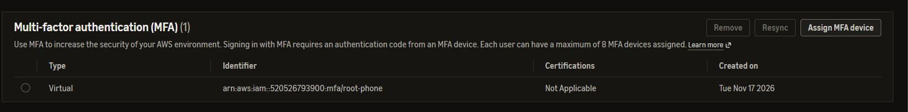
root-phone.
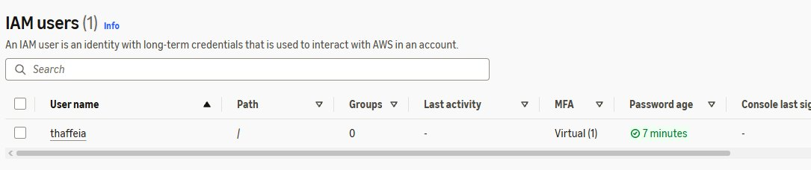
thaffeia, with virtual MFA.
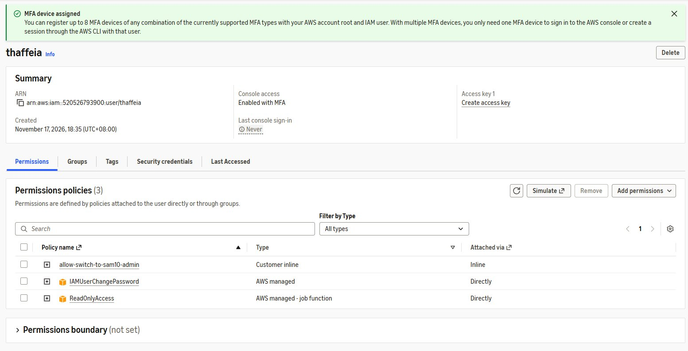
thaffeia: console access enabled with MFA; ReadOnlyAccess, change-own-password, and permission to switch into sam10-admin only.
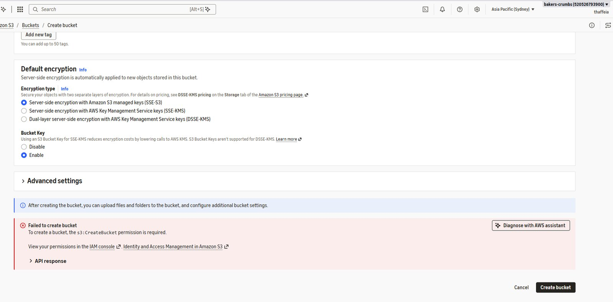
s3:CreateBucket.
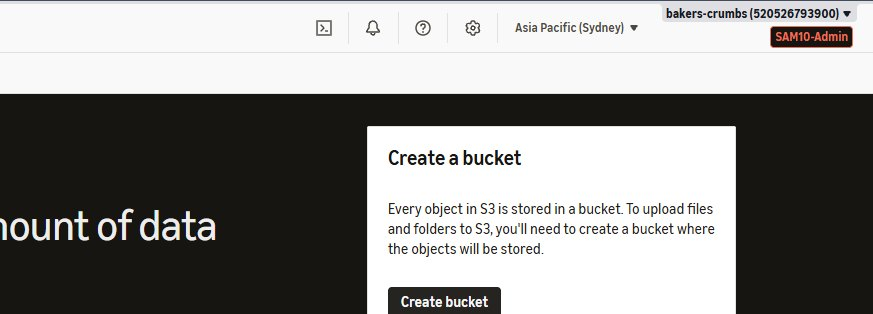
SAM10-Admin role.
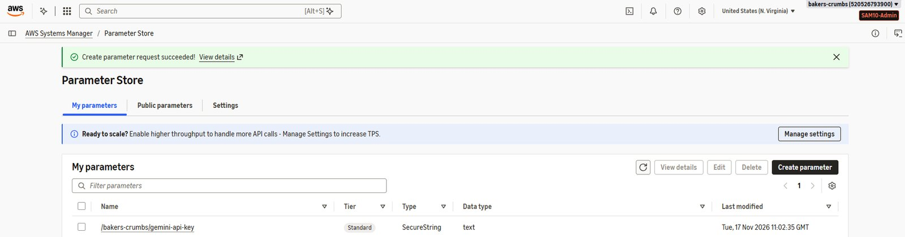

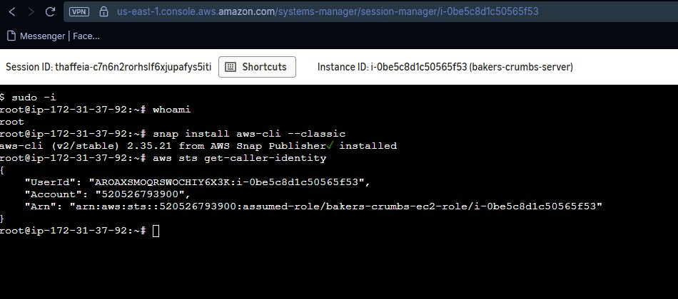
assumed-role/bakers-crumbs-ec2-role), no access keys stored.
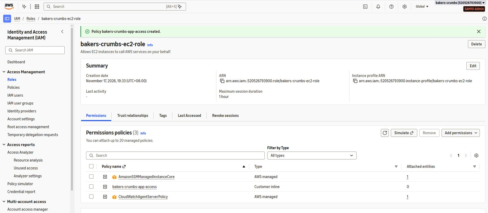

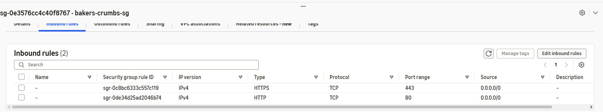

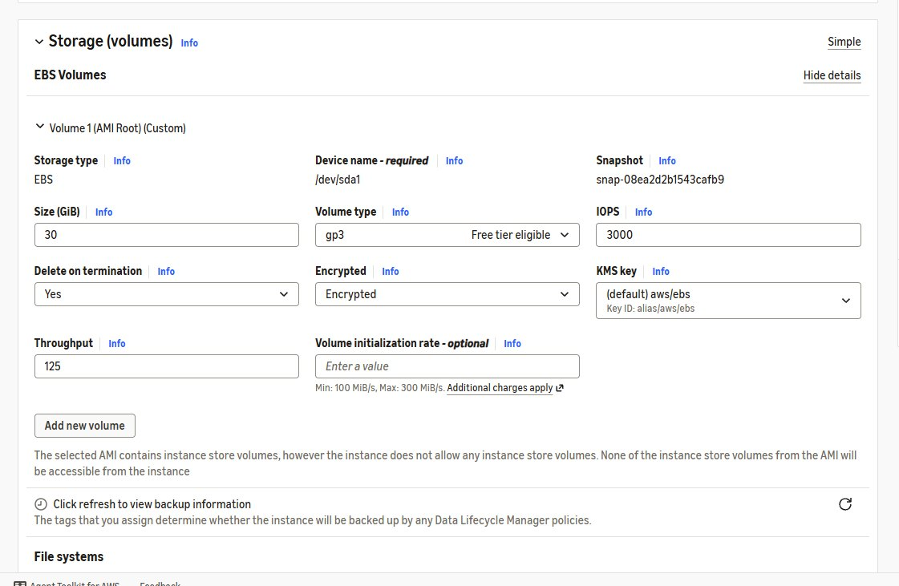

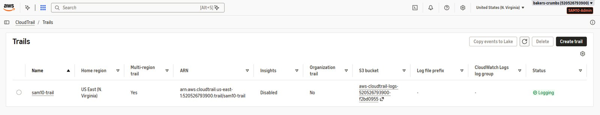
sam10-trail: multi-region, logging.
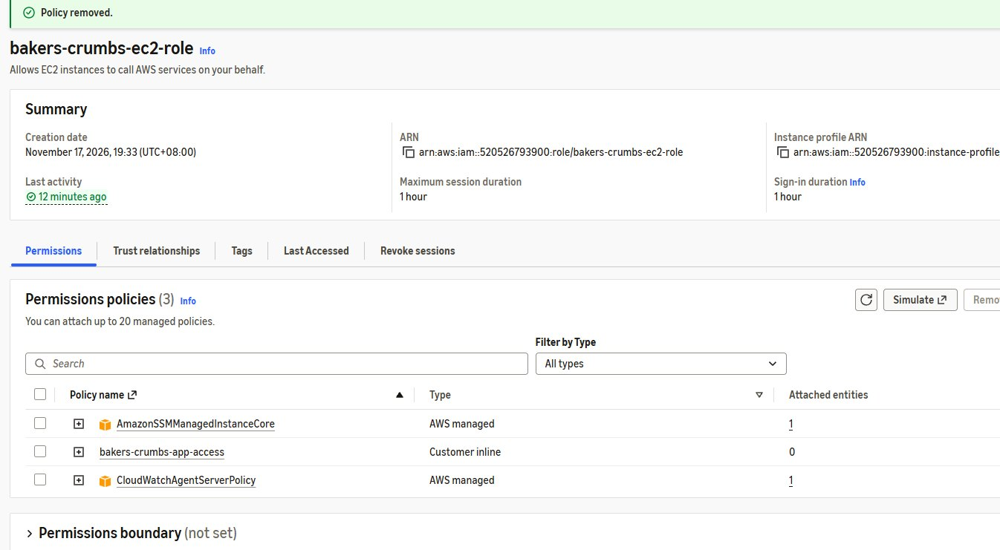
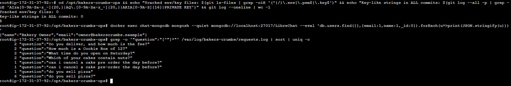